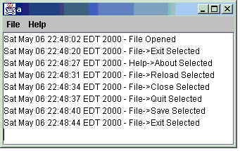

Exercise 8
Objective
To modify the [ sample code from Lecture
22 ] so that it records all menu operations for the first
version of our MP3 TagEditor class.
Assignment
For this exercise, compile and test the sample code I provided, to make
sure it runs properly. Then modify it so there are two menus on the
menu bar, a File menu and a Help menu. Add the following menu items to
the file menu: "Save," "Reload," "Quit", "Close," and "Exit." Add an
"About" menu item to the Help menu.
Set up an action listener for each menu item that does nothing except
append a log message that says that the menu item was selected.
Screen Shot
Here is a screen shot of one application window after the user has clicked
on the menu items, some of them repeatedly. Note that none of the menu
items does anything (such as exiting the application) at this point. They
all simply append messages to the text area when they are clicked.

Here is the contents of the file that was being edited in the above
screen shot, after the user exited the program by clicking on the "close
window" x button in the title bar:
Sat May 06 22:48:02 EDT 2000 - File Opened
Sat May 06 22:48:20 EDT 2000 - File->Exit Selected
Sat May 06 22:48:27 EDT 2000 - Help->About Selected
Sat May 06 22:48:31 EDT 2000 - File->Reload Selected
Sat May 06 22:48:34 EDT 2000 - File->Close Selected
Sat May 06 22:48:37 EDT 2000 - File->Quit Selected
Sat May 06 22:48:40 EDT 2000 - File->Save Selected
Sat May 06 22:48:44 EDT 2000 - File->Exit Selected
Sat May 06 23:01:33 EDT 2000 - Window Closing